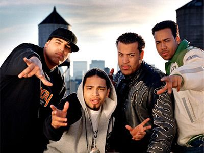

Artistas Destacados
Romeo Santos
Conocido como el "Rey de la Bachata".

Aventura
Grupo que popularizó la bachata moderna.

Juan Luis Guerra
Impulsó la bachata a nivel internacional.
Prince Royce
Uno de los artistas más exitosos del género.